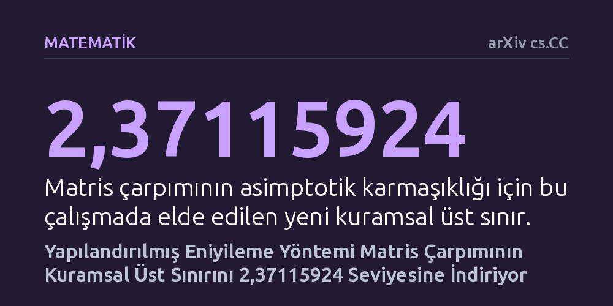

MATEMATIK · arXiv cs.CC · 2026-10-10
Çalışmada, iki kare matrisi çarpmak için gereken temel işlem sayısının kuramsal alt sınırları araştırıldı. Geliştirilen 212.820 koordinatlı yapılandırılmış eniyileme yöntemiyle matris çarpımının asimptotik karmaşıklık üst sınırı 2,37115924 değerine düşürüldü.
Bilgisayar biliminin en temel işlemlerinden biri olan matris çarpımında teorik hız sınırının henüz tükenmediğini ve matematiksel eniyilemeyle daha da iyileştirilebileceğini gösterir.

Matris çarpımı; bilgisayar grafiklerinden yapay zekaya, fiziksel simülasyonlardan büyük veri analizine kadar modern bilgi işlemin en temel yapı taşlarından biridir. Okullarda öğretilen geleneksel matris çarpımı yöntemi, n boyutundaki iki matrisi çarpmak için n küp (n³) mertebesinde işlem gerektirir. Ancak kuramsal bilgisayar bilimcileri, onlarca yıldır bu işlem sayısını azaltmanın ve çarpım hızını belirleyen omega (ω) üssünü teorik taban sınır olan 2 değerine olabildiğince yaklaştırmanın yollarını aramaktadır.
Bu alandaki her küçük matematiksel ilerleme, teorik olarak yapılabilecek en verimli algoritmanın sınırlarını yeniden tanımlar. Araştırmacılar, matris boyutları sonsuza giderken asimptotik işlem karmaşıklığını gösteren bu üssü adım adım aşağı çekmeye çalışmaktadır. Ortada duran temel soru, mevcut matematiksel çerçevelerin limitlerine ulaşıp ulaşmadığımız ve daha hızlı bir çarpım algoritmasının mümkün olup olmadığıdır.
Araştırmacı bu çalışmada, literatürde hızlı matris çarpımı kanıtlarında standart kabul edilen Coppersmith-Winograd tensörü ve kombinasyon-kayıp çerçevesi üzerinde çalıştı. Bu matematiksel çatıda kuramsal sınırı aşağı çekmek, devasa boyutlu parametre uzaylarında en verimli tensör parçalanışlarını aramayı gerektirir. Ancak bu arama sürecinde iki büyük engel bulunuyordu: düşük kütleli bileşenlerdeki zayıf gradyanlar ve eldeki üs değerini sınırlayan birbiriyle yarışan darboğazlar.
Yazar, bu engelleri aşmak için kütle ve olasılığa duyarlı bir yeniden ölçekleme tekniği geliştirdi. Bu teknik sayesinde, tam 212.820 koordinat içeren geniş bir parametre uzayında yarı-Newton optimizasyon algoritması koşturuldu. Ayrıca her aşamada üç farklı çıkarım rolünü dengeleyen altı kontrollü bir düzeltme mekanizması devreye sokularak kuramsal parametreler hassas biçimde optimize edildi.
Yürütülen optimizasyon sonucunda, iki matrisin çarpımı için gereken asimptotik işlem karmaşıklığı üst sınırı 2,37115924 olarak hesaplandı. Bu sonuç, Dupont ve çalışma arkadaşlarının daha önce elde ettiği 2,371177 sınırını geride bırakarak literatürdeki en iyi teorik dereceyi geliştirdi. Hesaplanıp doğrulanan üst sınırın 2,3711592385931075066123 ile 2,3711592385931075066124 aralığında yer aldığı matematiksel olarak gösterildi.
Araştırmacı, ulaşılan sonucun güvenilirliğini sağlamak adına pozitif rasyonel entropi-dual faktörleri kullanarak yapıyı kesin bir matematiksel sertifikaya dönüştürdü. Makaleye eşlik eden kanıt dosyası ve yalnızca Python standart kütüphanesini kullanan bağımsız çevrimdışı doğrulayıcı kod, iddia edilen üst sınırın harici bir yazılıma ihtiyaç duyulmadan herkes tarafından kontrol edilebilmesini sağlıyor.
Bu bulgu, matris çarpımının kuramsal sınırlarının henüz nihai noktasına ulaşmadığını ve yapılandırılmış eniyileme teknikleriyle sınırların daha da zorlanabileceğini gösteriyor. Kuramsal bilgisayar bilimi açısından, yarım asırdır süregelen omega üssünü 2 değerine yaklaştırma yarışında atılmış somut ve matematiksel olarak sağlam bir adımdır.
Bununla birlikte, elde edilen algoritmanın asimptotik bir yapı olduğunu ve pratik uygulamalara doğrudan yansımayacağını vurgulamak gerekir. Bu tür teorik algoritmaların barındırdığı devasa gizli katsayılar nedeniyle, günlük bilgisayarlarda veya mevcut yapay zeka çiplerinde kullanılan matris boyutlarında klasik yöntemler hala çok daha hızlıdır. Dolayısıyla çalışma, bugünkü yazılımları hızlandırmaktan ziyade hesaplama teorisinin doğasını ve matematiksel sınırlarını aydınlatmaktadır.